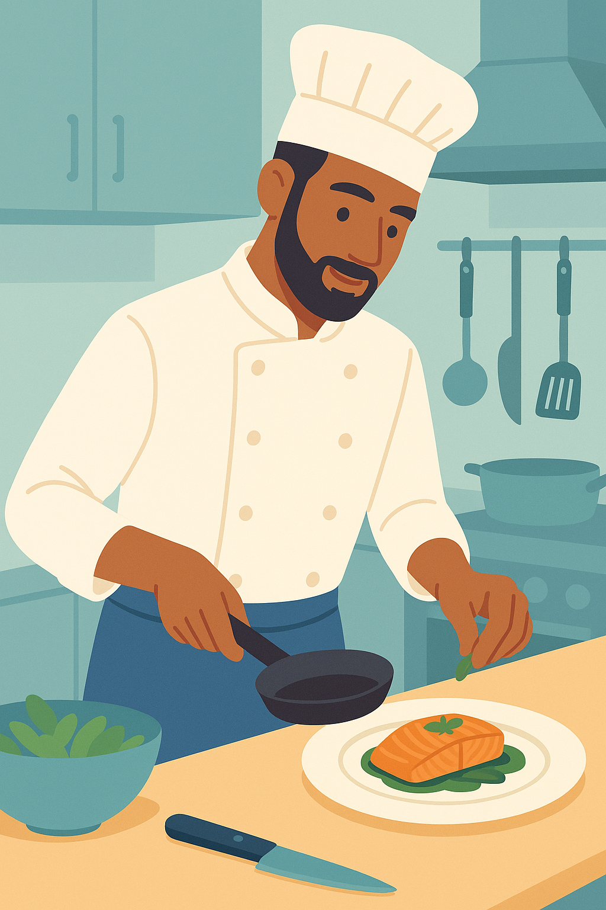

Vocabulary Focus – Professional Skills
Introduction
In Unit 2, Session 2, you’re building your professional profile by exploring key skills that make you stand out in the workplace. This Vocabulary Focus introduces hard skills and soft skills, essential for describing your abilities in fields like social integration, logistics, or other vocational areas. Hard skills are specific, technical abilities you learn through training, while soft skills are personal qualities that help you work effectively with others. Mastering this vocabulary will help you communicate your strengths confidently in CVs, interviews, or workplace discussions.
Hard Skills
Hard skills are specific, measurable abilities required for particular jobs or tasks. They are typically learned through education, training, or hands-on experience and are often tied to technical expertise.
- Accounting: Managing financial records and budgets.
Example: Preparing balance sheets is a key skill for administration roles. - Programming: Writing code for software or websites.
Example: Knowing Python is essential for an IT developer. - Digital Marketing: Using online tools to promote products.
Example: Creating social media campaigns boosts sales in commerce. - Culinary Techniques: Preparing and presenting food.
Example: Mastering recipes is crucial for a chef in hospitality. - Data Analysis: Interpreting data to make decisions.
Example: Analyzing research results is vital for a biologist. - Circuit Design: Creating electrical systems.
Example: Designing circuits is a core skill for electronics technicians. - Anatomy Knowledge: Understanding the human body.
Example: Chiropractors rely on anatomy to treat patients. - Foreign Language Proficiency: Speaking another language fluently.
Example: Speaking English fluently aids communication in tourism. - Graphic Design: Using software like Photoshop for visuals.
Example: Designing logos is valuable in marketing.
Soft Skills
Soft skills are personal attributes and interpersonal abilities that enhance your performance in any job. They are developed through experience and are crucial for teamwork and adaptability.
- Adaptability: Adjusting to new situations or changes.
Example: Being adaptable helps you thrive in a new workplace. - Teamwork: Collaborating to achieve common goals.
Example: Good teamwork speeds up project completion in logistics. - Time Management: Organizing tasks to meet deadlines.
Example: Effective time management balances multiple tasks in administration. - Communication Skills: Sharing and listening clearly.
Example: Strong communication builds trust with clients in commerce. - Problem-Solving: Finding solutions to challenges.
Example: Solving technical issues is key in IT support. - Leadership: Guiding teams toward objectives.
Example: Leadership drives successful projects in business. - Flexibility: Being open to new ideas or changes.
Example: Flexibility keeps you productive during schedule shifts in hospitality. - Continuous Learning: Seeking new knowledge.
Example: Continuous learning keeps skills updated in technology fields. - Resilience: Recovering from setbacks.
Example: Resilience helps you stay positive after a project delay. - Networking: Building professional relationships.
Example: Networking opens job opportunities in marketing. - Critical Thinking: Analyzing situations logically.
Example: Critical thinking improves decision-making in research. - Attention to Detail: Ensuring accuracy in tasks.
Example: Attention to detail prevents errors in quality control.
Skills Across Professions
The following table highlights key hard and soft skills across various professional fields, helping you understand their relevance in different careers.
| Professional Family | Hard Skills (Technical) | Soft Skills (Personal) |
|---|---|---|
| Administration and Finance | Accounting, Tax calculation, Financial software (e.g., SAP, Excel) | Attention to detail, Confidentiality, Time management |
| Commerce and Marketing | Digital marketing, Logistics management, E-commerce platforms | Negotiation, Customer service, Communication |
| Electricity and Electronics | Circuit design, PLC programming, System maintenance | Problem-solving, Precision, Adaptability |
| Energy and Water | Solar panel installation, Energy audits, Environmental regulations | Analytical thinking, Responsibility, Communication |
| Hospitality and Tourism | Culinary techniques, Food safety (HACCP), Hotel management systems | Creativity, Stress management, Teamwork |
| Food Industries | Quality control, Machinery operation, Food technology | Attention to detail, Organisation, Responsibility |
| IT and Communications | Programming, App development, Network administration | Problem-solving, Critical thinking, Flexibility |
| Installation and Maintenance | Mechanical repair, Industrial automation, Safety procedures | Responsibility, Precision, Teamwork |
| Sociocultural Services | Educational programme design, Social intervention techniques | Empathy, Communication, Conflict resolution |
| Healthcare | Patient care techniques, Medical diagnostics, Anatomy knowledge | Empathy, Resilience, Communication |
| Transport and Logistics | Supply chain management, Vehicle maintenance, Route planning | Time management, Problem-solving, Teamwork |
✨ Build your vocabulary to shape your career with confidence!